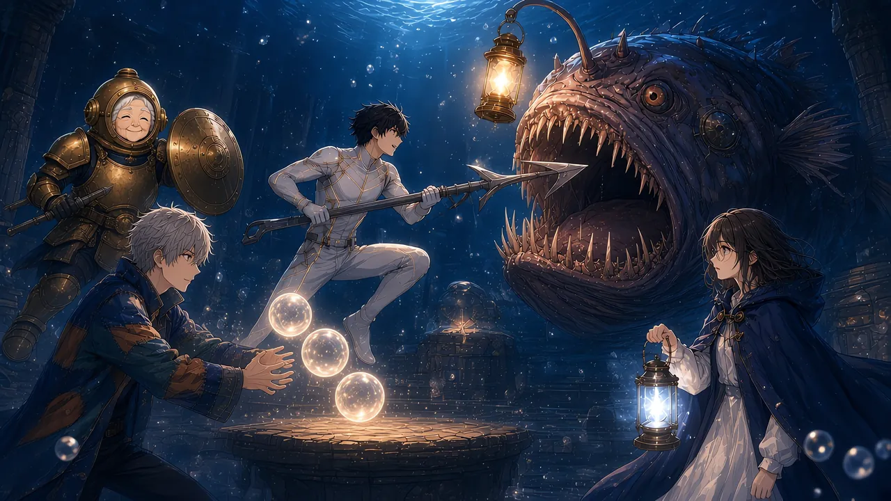

【深度 -800m／薄明層】
小礼拝堂は、前に来たときより暗かった。
祭壇の灯りは、もう二十も残っていなかった。まわりの珊瑚は、ほとんどが白い。雪の降り積もった森のように、音がない。
その奥で、琥珀色の提灯が揺れていた。
【灯喰い HP 2,400】
ゲージは、満タンに戻っていた。僕が削った分は、灯りを食べて取り返したのだろう。
「ほれ、兄ちゃん」
カゲロウが、泡の束から一本の銛を引き抜いて、僕に放った。
硝子ではない。灰色の、まっすぐな、ふつうの銛だ。
「貸しや。返さんでええけど、貸しや」
「どっちなんですか」
「気持ちの問題や」
【灯会の銛 を装備しました】
握る。重くて、頼もしい。
〈パーティ：？？？／ノア／カゲロウ／千歳〉
四つの名前が、視界の端に並んでいる。前は、二つだけだった。
そして、そのどちらも、今ここにはいない。
耳を澄ます。
灯喰いの腹の底から、かすかに何かが聞こえた。六つほどの音。上がって、少し下がって、また上がる。
「……いる」
「いるね」
千歳さんが、盾を構えた。
＊
「ほな、いくで！」
カゲロウの泡の束が、ほどけた。
泡が祭壇のまわりに散って、一つずつ、ぽうっと琥珀色に灯る。本物の灯りと見分けがつかない。
【泡身代わり ×3】
灯喰いの目が、偽物の灯りに向いた。
口がひらく。吸いこむ。
【灯喰い HP +0】
「回復せえへんで！ 中身、空っぽの泡やからな！」
灯喰いが、身をよじった。食べたはずのものが、腹の中で弾けたのだ。
その瞬間、提灯が、強く光った。
食べたあとに、必ず一度。
「今！」
僕は跳んだ。灰色の銛の穂先を、まっすぐ提灯へ。
「113」
数字の泡が、提灯の前で弾けた。胴を突いたときの、倍ちかい。
弱点だ。
灯喰いが、怒ったように尾を振った。
千歳さんの盾が、その前に立った。鈍い音。水が、重く揺れる。
「38」
赤い数字が、千歳さんの上で小さく弾けた。それだけだった。九十九の盾の前では、あの尾も、ただの波だった。
「来るよ、ルカ。提灯が暗くなる」
一拍半。
僕は横へ跳んだ。顎が、空を噛む。
跳んだ先で、ノアのランタンの光が待っていた。
「はい、ルカくん」
白い炎が、僕の泡殻を包む。
「2,104」
緑の数字が、大きく弾けた。
HPのゲージが、一瞬で端まで満ちた。満ちて、余った。僕のHPは410しかない。回復量は、その五倍だった。
「……多すぎませんか」
「ごめん、加減が苦手で」
ノアは笑った。灯守Lv72の光は、僕の泡殻には大きすぎるらしい。
この演出は、ちょっと気持ちよすぎる、と思った。
＊
【灯喰い HP 1,640】
作戦は、回りはじめていた。
カゲロウが偽物の灯りを灯す。灯喰いが食べる。空振りの腹で、提灯が光る。僕が突く。千歳さんが尾を受け、ノアが割れかけた泡を戻す。
「107」「121」「CRITICAL 172」
提灯の前で、金色の泡が大きく弾けた。
【灯喰い HP 1,240】
灯喰いが、急に向きを変えた。
偽物の灯りでも、祭壇でもない。琥珀の目が見ていたのは、ノアのランタンだった。
白い炎。この礼拝堂でいちばん強い灯り。
「ノア、下がって！」
提灯が、暗くなる。
一拍半より、早かった。学習している。
顎がひらいた。ノアは動かなかった。ランタンを胸に抱いたまま、目だけを大きくして。
その前に、真鍮の兜が割りこんだ。
「させないよ」
千歳さんの盾が、顎ごと灯喰いを押し戻した。重い音が、礼拝堂の柱を震わせる。
「211」
赤い数字。千歳さんの上で弾けた、今夜いちばん大きな数字だった。それでも、あの人の足は一歩も下がらなかった。
「……ありがと、千歳さん」
「灯りを守るのが、潜騎士の仕事さ」
「ルカさん、右です！」
カゲロウの声だった。けれど、言葉の置き方が違った。丁寧で、少し硬い。
「尾が、右から。……次は、提灯が光ります」
言われたとおりに、尾が来た。僕は左へ逃げた。
視界の隅で、時計が【2:30】に変わっていた。さっきまでの「ほな、いくで」と、同じ口だった。戦いのさなかに、カゲロウの中の誰かが、入れ替わったみたいだった。
考えている暇は、なかった。
拍子がある、と思った。
食べる。光る。突く。受ける。戻す。
四人の動きが、一つの曲の小節みたいに繰り返される。そこに、灯喰いの腹の底の歌が、かすかに重なっていた。
ウタの歌は、少しずつ大きくなっていた。
提灯が光るたびに、その中で、透きとおった何かが揺れるのが見えた。溜めこまれた灯りの真ん中に、ひときわ澄んだ光が一つ。
「ウタ！」
呼んだ。
提灯の中の光が、揺れた。
歌の拍子が、変わった。
六つの音の、終わりのない旋律。それが、僕たちの小節に合わせて、拍を刻みはじめた。
食べる。光る。――ラ、と高い音。突く。――下がる音。受ける。戻す。――また上がる。
腹の中から、ウタが、こっちの曲に入ってきた。
「……合いました」
カゲロウが、小さくつぶやいた。
千歳さんの盾が、拍子に合わせて鳴る。ノアのランタンが、拍子に合わせて明滅する。僕の銛が、拍子の頭を打つ。
四人と、腹の中の一人。
【連携条件を満たしました】
【連携技「潮騒銛」】
視界に、知らない名前が灯った。
千歳さんが盾で灯喰いの顎を押しあげる。カゲロウの泡が三つ、提灯のまわりで同時に弾ける。ノアの光が、僕の銛の穂先に集まる。
ウタの歌が、いちばん高い音に届いた。
その一拍に、僕は銛を突きだした。
＊
「1,280」
四桁の数字が、提灯の真ん中で、ふくらんだ。
金と、白と、琥珀と、翠。四つの色の泡が重なって、一つの大きな虹の泡になって――
弾けた。
潮が引くときの、あの長い音がした。浜を洗う波が、いっせいに砂を鳴らすような。
四人ぶんの力が、一つの数字になっていた。誰がいくつ足したのかは、どこにも書いていない。
一人では、決して出ない数字だった。
【灯喰い HP 0】
提灯が、割れた。
中から、光があふれた。
何十もの灯りが、琥珀色の炎の形のまま、いっせいに外へ流れだした。糸を引くように細く、それから、ふっと元の形に戻って、祭壇へ帰っていく。
【祭壇の灯り 18 → 40】
灯りが燭台に一つずつ戻るたびに、礼拝堂が明るくなる。
けれど、白くなった珊瑚は、白いままだった。
色は、戻らなかった。灯りが帰ってきても、一度忘れられた言葉は、もう流れない。
それでも、白い森は、灯りに照らされて、少しだけ温かそうに見えた。
戻ってきた灯りの一つが、僕の目の前で揺れていた。
炎の芯に、細い文字。
〈ここで待ってる〉
前に、灯喰いの口へ吸いこまれていくのを見た、あの一行だった。
帰ってきたのだ。誰が、誰を待っていたのかは分からない。それでも、その言葉は、元の燭台に戻って、また同じ場所で灯りはじめた。
そして、最後に、いちばん澄んだ光が、提灯の殻からこぼれた。
透きとおった体。四角い欠片の衣。長い袖が、触手のように光をひいて揺れる。
「……ルカ」
ウタだった。

泡殻を持たない深民の体は、どこも欠けていなかった。ただ、少しだけ、前より光が強い気がした。
「歌、聞こえてた？」
「聞こえてた」
「よかった」
ウタは、僕の泡殻にぴたりとくっついた。
「ずっと、暗かった。でも、ルカの数字が弾ける音が、外から聞こえたの。ぱちん、ぱちんって」
頭上の名札が、一瞬だけ、また薄くなった気がした。
浅瀬のときと同じ。ほかの誰に呼ばれても起きなかった、あの揺れ。
すぐに、元に戻った。
＊
灯喰いのほどけたあとに、金色の泡がいくつも浮かんでいた。
ファンファーレが鳴った。
【LEVEL UP!】×3 Lv 8 → Lv 11
PRS 90 → 120
ウタが、拍子に合わせて手を叩いた。
そのとき、ウタの前に、透明な板がひとつひらいた。
【深民「ウタ」は、ジョブを選ぶことができます】
六つの結晶の小さな影が、板の上で回っていた。
ウタは、迷わなかった。
指が、青い結晶の影に触れる。
【ウタ 歌潮士 Lv 1】
【深民「ウタ」がパーティに加わりました】
〈パーティ：？？？／ウタ／ノア／カゲロウ／千歳〉
「ゲストじゃ、なくなった」
ウタは、自分の名前を見上げた。それから、僕の【？？？】の隣にある、その二文字を、指でそっとなぞった。
「歌で、だれかの役に立てるなら。わたし、それがいい」
自分で選んだのだ、と思った。誰に言われたのでもなく。
＊
「ルカさん、何か落ちています」
カゲロウが、祭壇の下を指さした。
灯喰いのほどけた場所に、紙のようなものが一枚、沈んでいた。
拾いあげる。
チケットだった。
ひどく色褪せている。角は丸く擦りきれて、印刷はほとんど白く飛んでいた。それでも、何行かは読めた。
＿＿＿＿ 最終夜イベント 入場券
地名のところだけが、白い。ウタの「ようこそ」と同じように。
僕は、その文字を見つめた。
地名ではなく、文字の形を。
横画の終わりが、少しだけ丸い。払いが、水に溶けるように細くなる。夜の画面でも読めるように、ほんの少しだけ字間をあけた、明朝体。
知っている。
この書体の見本帳を、何十冊もめくった夜を、僕は覚えている。
そのチケットの書体は、七年前に僕が自分で選んだものだった。